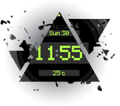

EMS the elicitation of muscle contraction using electric
impulses, it can be utilized as a strength training tool for
healthy subjects and athletes; it could be used as a
rehabilitation and preventive tool for partially or
completely immobilized patients; it could be utilized as a
testing tool for evaluating the neural and/or muscular
function in vivo; it could be used as a post-exercise
recovery tool for athletes.
EMS technology to trigger muscle contractions, perfect
for both men and women.
What is the EMS abdominal trainer

How it works

 High-tech unit with a wireless and 360 degree controller without obstacle.
High-tech unit with a wireless and 360 degree controller without obstacle.
Easy operation and convenient using method.
Easy push-button operation with 6 modes.
Electromagnetic pulses help firm and define your core.
Equivalent to 60 minute real life workouts.
Easily cleansable – simply wipe with a dry cloth.
Why is it worth trying?

SAVE TIME
Currently the lack of time is catastrophic and having
2-3 hours for normal workouts in a gym is simply
impossible. With EMS stimulation the training time is
reduced to 20 minutes. This is enough to achieve
success in caring for your figure.
THE DEVELOPMENT OF MUSCLES THAT ARE
NORMALLY DIFFICULT TO FORM
EMS simultaneously activates 90% of all the
muscles of the body during the entire training, even
activating places of difficult access. Unlike current
workouts, the muscles are strengthened from the
inside.
POSSIBILITY TO VARY THE TRAININGS
Professional athletes go to such workouts to get the
maximum effect, increasing speed and strength.
Personal trainers in gyms include EMS to their
program to accelerate the exchange of substances,
contributes to weight loss and muscle development.
RECOVERY AFTER WOUNDS.
EMS technology is widely used in medicine and
professional sports. Therapists apply the saving
stimulation regimen to help patients rehabilitate after
receiving wounds. During electrostimulation the
joints are not overloaded, only the muscles work.